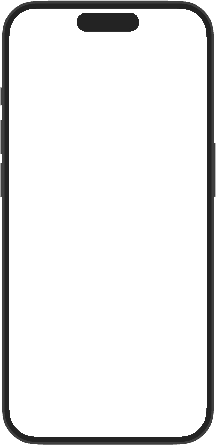
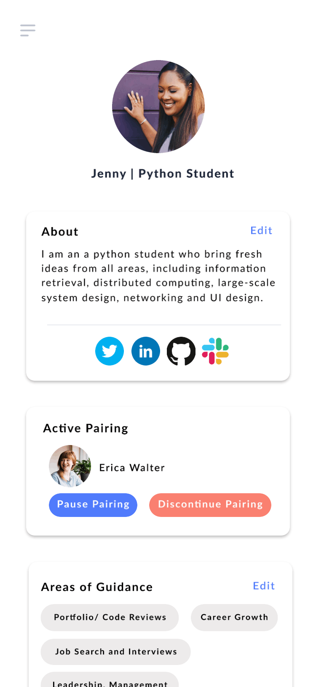
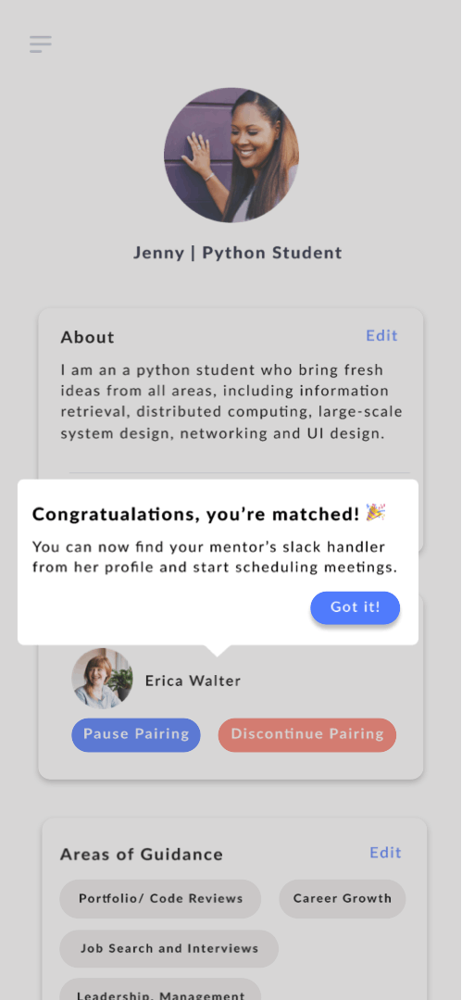
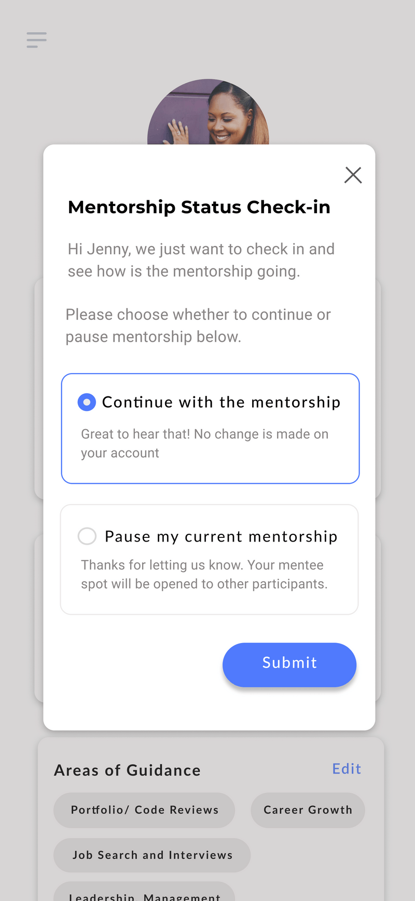
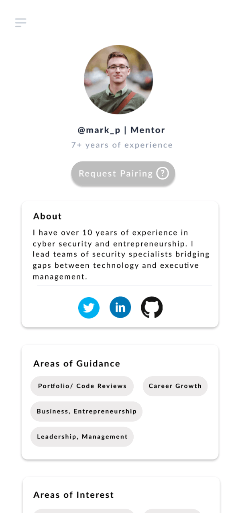
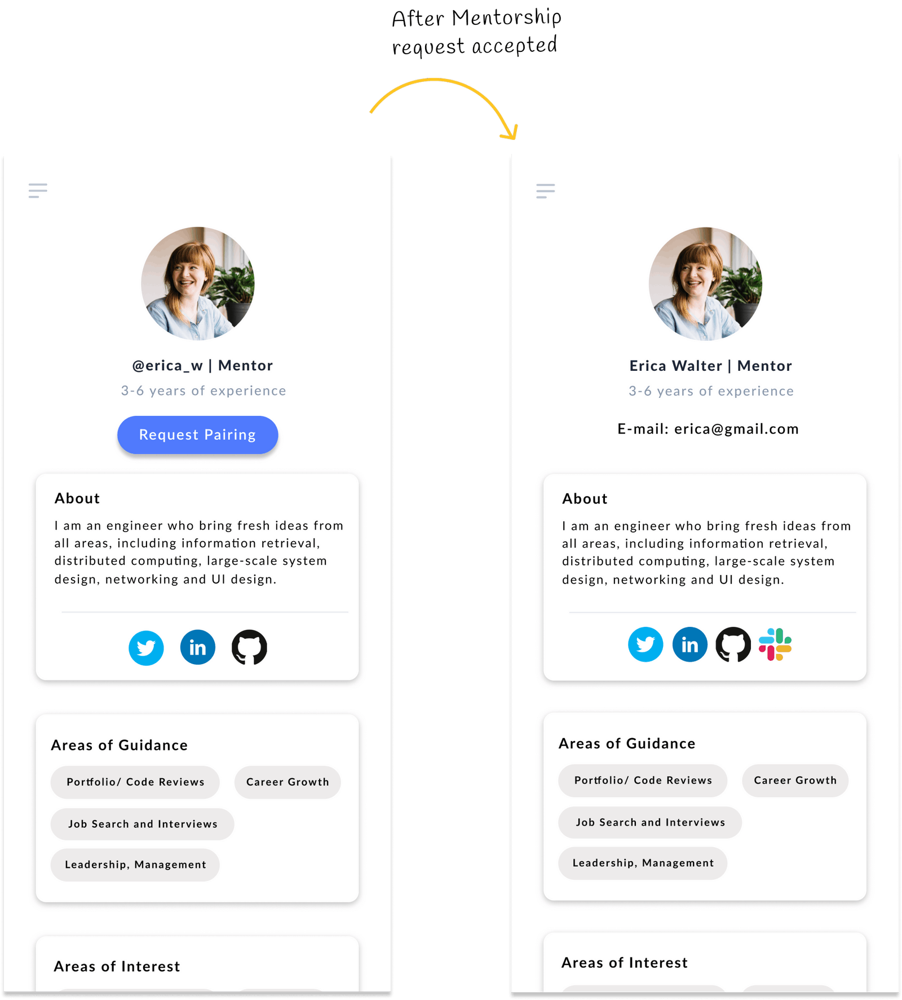
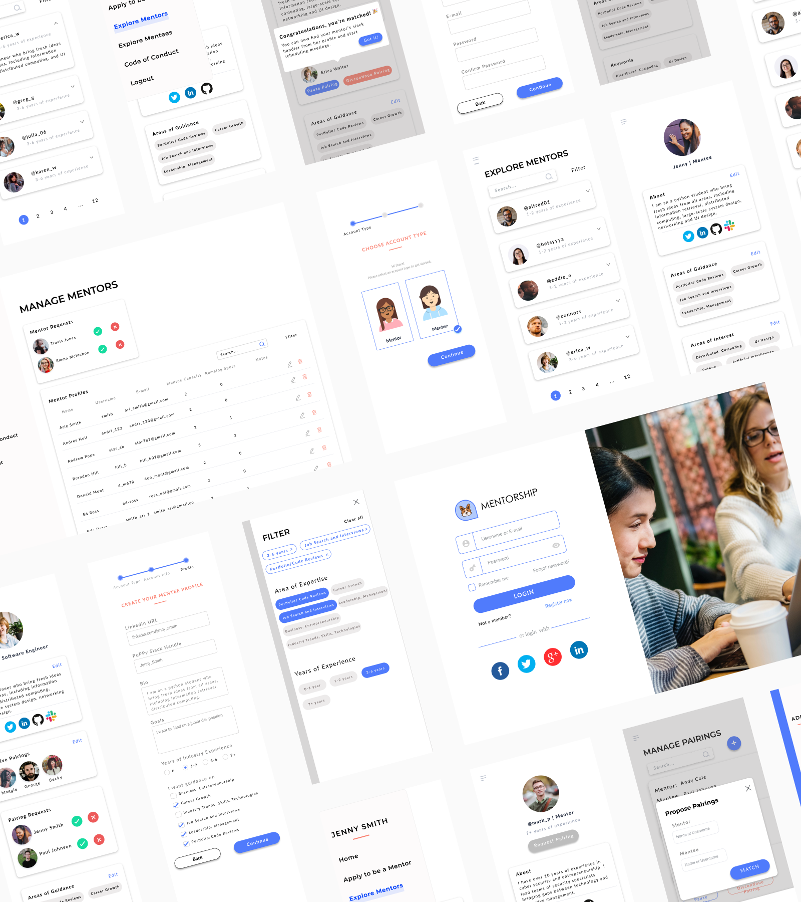
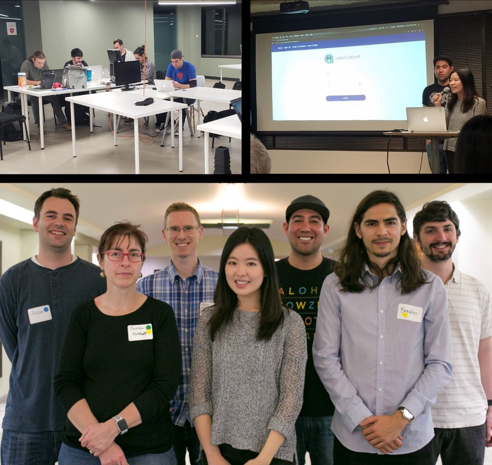

Overview
Puget Sound Python Programming (PuPPy) is a user group dedicated to proliferating a diverse and talented Python community in the Puget Sound region. Its mentorship program was founded to connect aspiring developers with experienced members in the tech industry.
The goal of this project was to reduce the manual overhead of running the program so organizers could focus on fostering connections rather than managing spreadsheets.
In 2018, I participated in a hackathon to design an open source, responsive web application to automate the administrative tasks of the mentorship program in the interest of scaling and sustaining its success.

The Problem
How to create an effective management framework that eliminates the time-intensive tasks and hassle from a mentorship program?
The Challenge
Previously, managing the PuPPy mentoring program has been a time-consuming and low-tech task. It involved manually reading through Google Forms, updating Google Sheets and sending numerous emails. The tedious work has contributed to the high turnover rate of volunteers and it has become burdensome for veterans to keep training new volunteers about the system.
The program owner sought help to build a responsive web application that streamlines the administrative tasks in hopes to alleviate the workload. The open source project strives to become a tool which any tech community can use to start and manage their mentorship programs.
The high level goals were to:
- Create an open source platform to help organizations to facilitate and start their mentorship programs effectively.
- Grow a community dedicated to helping early-career software developers overcome the challenges of starting their new professions.
Market Research
After gathering insights from stakeholders, I began to analyze the UI patterns and mentor matching process solutions from competitors. From the research, I learnt that there are two common ways mentors and mentees are matched.
The most popular method, which is also PuPPy's pre-existing method, is assignment. This experience is to do the heavy lifting on behalf of the mentees; volunteers manually sort through mentee's applications and assigned mentors based on their preferences, skill sets and characteristics.
The second method is self-selection where mentees can browse and dive into mentor's profiles, request to match with the people based on their needs. The new application will adopt this method, where we assert control back to the users on the mentor selection process thus minimizing administrative loads of volunteers.
Administrator roles will change from primary to ancillary. They will provide suggestions if mentees struggle to seek the appropriate match. And with the new structure, they will focus on overseeing the overall program operations and act as mediators to resolve conflicts between mentors and mentors when they arise.
Ideation
Based on the insights and findings I got from competitive analysis, I created personas to cover the three main audience groups that will use the application.

Iterations and Explorations
Based on the insights I gathered from the product owner and market research, I proceeded to lay out the information architecture and user flow to cover the primary use cases. The application will be introduced and used in PuPPy meetings, hence the design utilized a mobile-first approach that lets participants to sign up via mobile and allows me focus on the necessary contents and elements on the page.
Mentors are a scarce resource and individuals who have agreed to be mentors have a strong commitment to the process. Throughout the mentorship, mentors and mentees are given the discretion to decide on the mentorship arrangements and meetings. While no specific rules are in place, mentors and mentees are encouraged to meet on a regular basis. We want to avoid situations where mentors become an idle resource. Every mentorship will naturally taper off over time - but not end. One thing we have to design for is to adequately identify mentees who are not actively meeting their mentors so the system will be updated and the mentor's valuable time can be reallocated so more mentees can benefit from their knowledge in the community. And to do so, we need to design to enable mentees to notify the program when their mentorship has stagnated.
Though this might sound like an easy step, there are a few potential roadblocks: 1) Feature discovery 2) Incentives for mentees to use the feature.
Initially, the team decided to reuse the "Discontinue Pairing button" for the purpose of enabling mentees to notify PuPPy that the mentorship has been paused. But after some debates, I recognized that it is important to distinguish and break down the inactive mentorship notification functionalities into a more discrete non-overlapping functions with the discontinue button.
The reasons for the decision is unlike the discontinuing pairing function, which is usually used in early stage of paring: when a mismatch is discovered by the mentor, the mentee, or both and volunteers. Once clicked, administrators will be notified and step in to mediate and resolve the conflict at hand and help mentees to seek for a new suited mentor. In addition to that, the verbiage "Discontinuing pairing" might discourage and deter mentees from using the feature when they have amicable relationships with their mentors. To overcome these roadblocks, I designed the pausing mentorship feature that allows mentees to inform PuPPy that their mentorship is inactive.
The Solution
With the increasing number of participants joining the program in the foreseeable future, there are three design questions that helped shape my design strategy.
- One of the constraints of the program is that there are far more mentees than mentors. If a mentee is no longer meeting up with his or her mentor on a regular basis, we would like the mentee to notify the program so that the mentor can be freed to mentor a new mentee.
- The new mentoring pairing model will depend heavily on mentee self-selection; how much of a mentor's information should we display on the online profile before a pairing is made?
- How to create a smooth notification process for users when there is a mismatch?
After some brainstorming and research, I proposed four key feature ideas: Hassle-free reassignment, Mentorship Pause, periodic status check-in and progressive personal information disclosure to better streamline the overall administrative process and protect the privacy of mentors. Central to the features were these key ideas:

Hassle-free Reassignment
Even with the best effort to find the perfect match, a mismatch between a mentor and mentee can occur. The mismatch may result from difference in areas of expertise, career goals, conflicting personalities, or any number of other reasons. Mentees can discontinue the pairing on the app and administrators will subsequently be notified and step in as mediators to resolve disputes or/and help mentees to identify a more appropriate mentor if desired.

Informative Onboarding Tooltips
Once users successfully paired with a mentor, I use tooltips as an onboarding mechanism to grab users attention and give users a brief overview of the Pause mentorship and Discontinue pairing features. The tooltip messages are short and concise and they provide users information in a friendly and unobtrusive way. The result aims to be educational rather than unnecessarily disruptive. They help take some of the guesswork out on the button functions.

Periodic Status Check-in
Besides the feature tour to guide users through the mentee profile page, it is essential to have periodic status check in with mentees every three months to have the latest updates of their mentorship statuses. I believe that such handholding and guidance is necessary for effective mentoring to occur.
The automatic prompts serve as a reminders on the possible overlooked feature and encourage mentees to check on the progress of the mentoring session and take actions accordingly. The tooltips language are designed to have a personal, human tone to get users to pay attention and take action.

Incentivize Lifelong Mentorship
It is natural that an existing mentorship will enter the maintenance phase. Another way to promote users to notify the program when the mentorship is inactive is to provide incentives. Since we have a limited number of mentors, all mentees can only be paired with one mentor. And it is common that the challenges the mentees face when they are starting out are different from what they face 2 to 3 years in the industry. Later in the career, mentees might want to seek out different mentors to expand their network or get a fresh perspective and guidance.
If a mentee already been assigned to a mentor and wants to initiate new match, we provide a pop up that is shown explaining the new pairing request is prohibited. There is information that inform them that all mentees can only be assigned to one mentor. In order for them to request a different mentor, they have to pause on the current pairing before they can proceed with the new mentor request. The popup helps users to be accustomed to the idea of "pausing a pairing" and to minimize the user's frustration. And mentees are encouraged to maintain connections with previous mentors who they can turn to when desired.
Progressive Personal Information Disclosure
The PuPPy matching process will focus on self-selection. It raised the question on how much information to display when mentee is browsing through mentor's profiles. The application takes privacy very seriously. Before the match, only mentor's usernames, expertise, introduction are displayed. It does not release the mentor's full name, slack handler, e-mail information until mentors accept the match request.

Design
Intended to be modern and distraction-free, the style of design places emphasis on important information such as call-to-actions, and contact information.

The Product
By the end of phase one of the Hackathon, we completed the core functionality of the product and delivered a presentation to share the prototype with the community.
During the application presentation, we highlighted the major features and presented the vision we have for the application. The project owner was happy with the design and reception of the project is positive. The demo also served the purpose to persuade developers to support its vision and cause.

Reflection & Takeaways
This project gave me the opportunity to take a design from early concept all the way through to a working prototype — covering research, information architecture, interaction design, and visual design in a compressed timeline. More than the craft, though, it was incredibly meaningful to design an open source solution that helps the tech community implement and scale their mentorship programs.
This one is especially close to my heart. I graduated from a coding bootcamp several years ago, and I remember vividly the frustration and nerves of starting out in the tech industry. It was the formal and informal mentoring I received from the community that enriched me personally and professionally and helped me along the way — so I'm glad I got to pay some of that forward. Even if the free pizza 🍕 was also a strong motivator.
